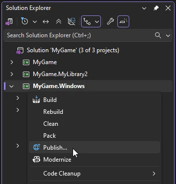
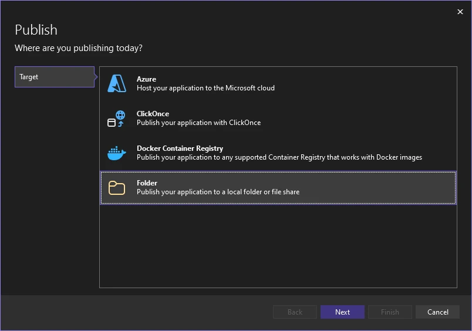
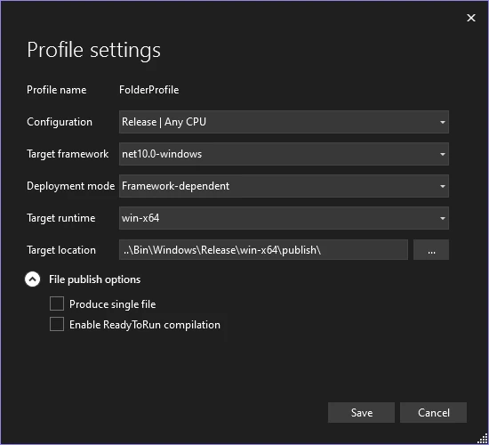
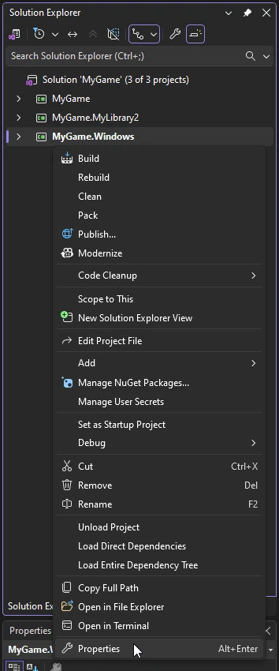
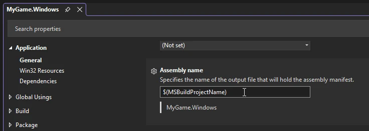
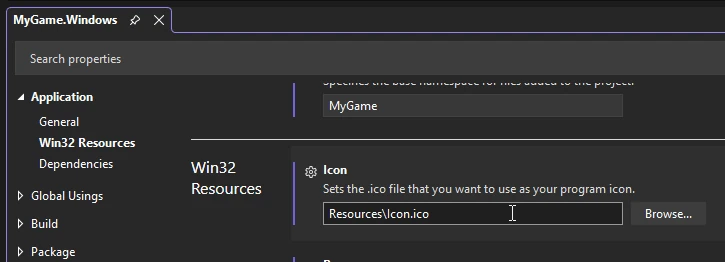
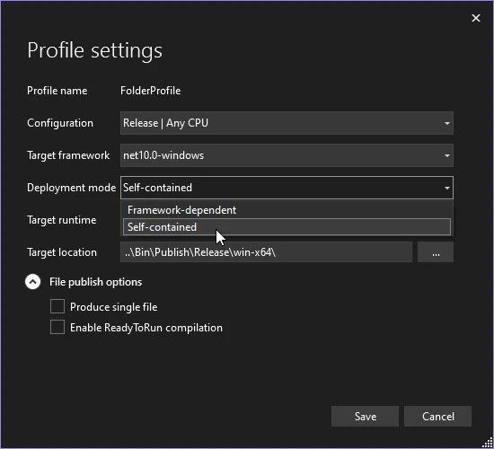
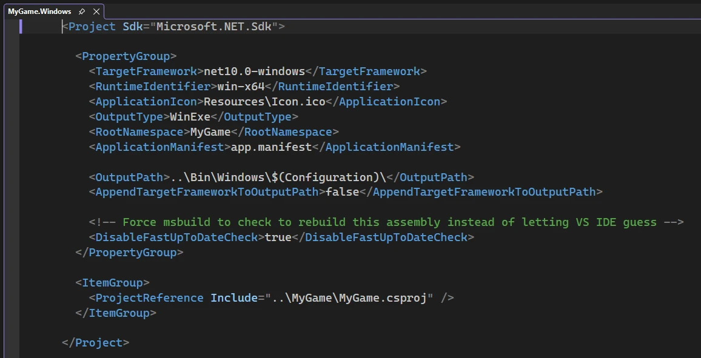
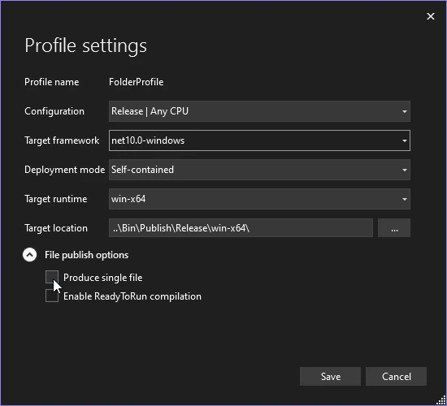
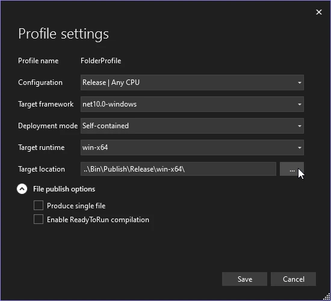

Setup
Beginner
There are many configurable options that change how the game gets built. This page goes over a few of the more important ones.
How to change properties
Visual Studio has it's own publishing system, which provides a graphical way of managing build settings.
In the Solution Explorer panel, right click on the platform package which you want to setup and select Publish.

This will open a new tab and a setup wizard. Select the Folder option, then choose Folder again and then optionally, specify the location where you want the build to end up.

Now, you can change the settings by pressing the Show all settings button.

| Setting | Description |
|---|---|
| Configuration | The configuration to be used when publishing. |
| Target framework | The .NET framework that will be used by the game. |
| Deployment mode | Determines whenever the framework that is required to run the game should be embedded in the application, removing the need to install the .NET runtime by other users. For more information, check out the self contained section. |
| Target runtime | The platform and processor architecture to publish for. |
| Target location | The location of the published build. For more information, check out the output directory section. |
| Produce single file | When true, all non-native libraries will be embedded in the executable. For more information, check out the single file and include native libraries section. |
| Enable ReadyToRun compilation | Improves startup performance at the cost of the application size. For more information, read the Microsoft article. |
For some options, you might need to change the platform package's properties, which can be done by right clicking on it and selecting Properties.

Name
To change the name of the executable, you'll have to change the assembly name of the platform package.
In the platform package's properties, look for a field named Assembly name.

Icon
The file for the application icon is located in Resources/Icon.ico. To change it, simply replace the file.
If you want to, you can also change the location of the icon.
In the platform package's properties, look for a field named Icon.

Self contained
Making an application self contained removes the requirement for a user to have the .NET runtime installed on their machine.
Due to how .NET applications generally work, Stride games require the runtime in order to run. If it's not present, the game will instead show a window asking the user to install it.
Note
.NET applications are fairly common, especially on Windows, so it's very likely that a user already has it installed.
There are benefits and drawbacks to making a game self contained:
- 🟩 Benefits: the game will work even if a user doesn't have the runtime installed.
- 🟥 Drawbacks: the game's size will be larger.
In the profile settings, change the Deployment mode option to Self-contained.

Single file and include native libraries
By default, building will create a .dll file for every package used by the project. These files can be embedded in the application executable itself by enabling Publish single file.
Despite it's name, this option still won't make the game a single file, as it won't embed the native libraries used by Stride. For that, you'll have to additionally enable Include native libraries for self extract.
Note
Even with all these options enabled, Stride will still produce an additional folder for it's assets named data, that needs to be included with the game.
To enable Include native libraries for self extract, double click on the platform package and add <IncludeNativeLibrariesForSelfExtract>true</IncludeNativeLibrariesForSelfExtract> to the <Property Group>.

Now, to enable publish single file, go to the profile settings and in the File publish options tick the Produce single file checkbox.

The output directory
There are two paths which can be configured:
- Output path - path to the directory that contains all build files for all builds, both Debug and Release.
- Publish directory - path to the directory that contains the final result when publishing a project.
By default, the publish directory is set to $(OutputPath)/publish.
To change the output path, double click on the platform package and change the value of <OutputPath> in the <Property Group>.
To change the publish directory, open the profile settings and modify the value of Target location.
